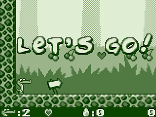
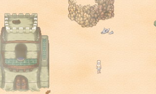
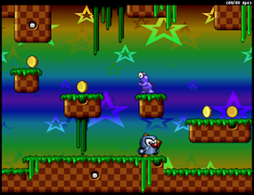
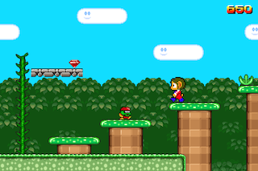
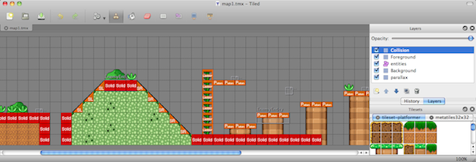
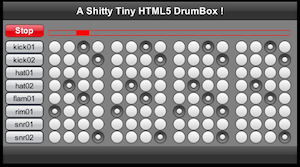
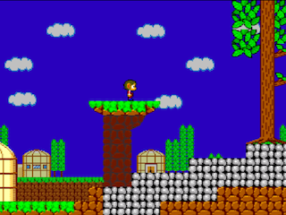
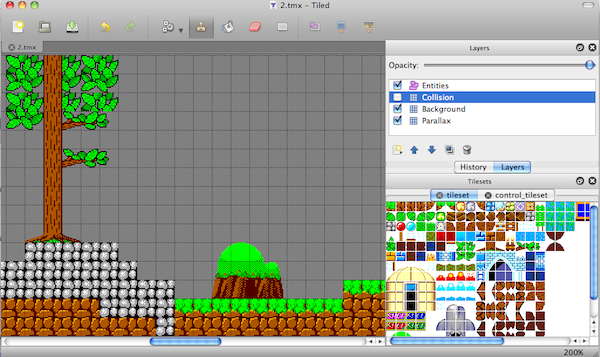

melonJS games and demos
you'll find here below some links to games and demos using melonJS. If you want to share you work with the library, I will be very happy to add it to the below list
Games
Alex the Allegator 4 - web edition
a HTML5 remake of the classic "alex the allegator 4" game, available here and created by Johan Peitz from Free Lunch Design.
Although featuring only the 6 first original levels, it reproduces almost all of the original game mechanisms, and uses mostly all the features available in melonJS !
click here to try it out!
Demos
TMW.js
 A basic HTML5 version of The Mana World, by Thorbjorn Lindeijer, the author of Tiled.
Please see the following link to the Tiled homepage, for further details about it, or click here to see it running.
Thank you Borjn !
Note: The following demos have been actually used during melonJS development, to test and validate the engine. They are very limited and only use some particular features, so don't expect anything polished here!
melonJS Tutorial
A simple platformer demo, designed during the creation of the melonJS step by step game creation tutorial :
Demo is available online here.
Or you can also check here for the Tutorial itself.
Tiled and collision demo
a simple platformer to demonstrate the loading of tiled map using melonJS
demo is available through the download package, or online here
the whole level have been designed using only tiled, as shown on the below picture.
drumbox
a small and simple drumbox to show the audio support in melonJS
demo is available through the download package, or online here
alexkidd mini remake
This demo is based on the PC/SDL Alex Kidd remake that you can find here. It actually reuse the original tilemap and tileset, just slighlty modified to be compliant with melonJS own implementation, and represents approximatively 1 hour of work to achieve this result
demo is available through the download package, or online here
